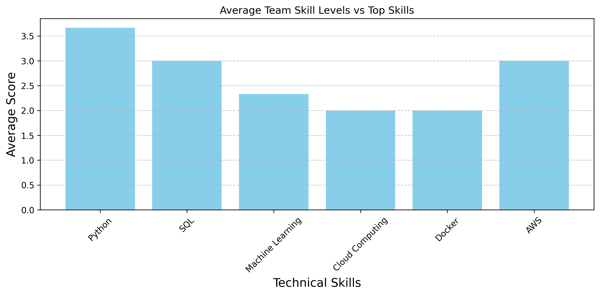
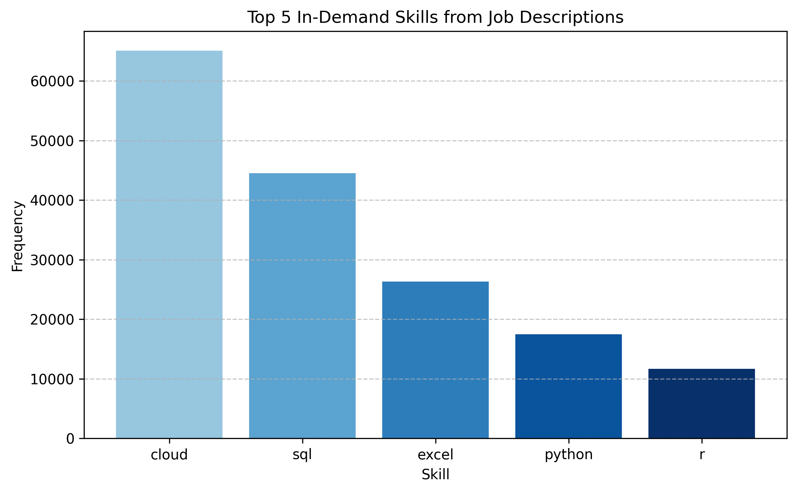

Code
import seaborn as sns
import matplotlib.pyplot as plt
import pandas as pd
from collections import Counter
import re
import osThis section presents the skill gap analysis between job requirements and available workforce skills.
Firstly, presents a structured evaluation of the current technical skill levels across all team members. The aim is to understand the team’s collective readiness for data and IT-related roles by profiling their strengths and identifying potential gaps.
The table below contains self-assessed skill scores provided by each team member across seven key technical areas: Python；SQL ；Machine Learning ；Cloud Computing ；AWS；Docker. Each score reflects the individual’s current proficiency on a scale from 1 to 5.
Each team member rated their own proficiency in these 6 tech skills. These self-assessments allow the team to identify strengths, weaknesses, and areas for upskilling.
The “Docker” skill area, in particular, deserves clarification. Although it is labeled as “Docker,” the term here is used broadly. It covers foundational and practical knowledge in containerization technologies—not limited strictly to Docker itself. Skills such as writing Dockerfiles, managing containers, using images, and deploying containers on cloud-native services like AWS ECS or Kubernetes all fall under this category. Consequently, coursework or experience that didn’t explicitly use the word “Docker” but involved equivalent technologies was still treated as contributing to this category.
plt.figure(figsize=(10, 6))
sns.heatmap(df_skills, annot=True, cmap="coolwarm", linewidths=0.5)
plt.xlabel("Technical Skills", fontsize=14)
plt.ylabel("Team Members", fontsize=14)
plt.xticks(rotation=30)
plt.title("Team Skill Levels Heatmap")
plt.tight_layout()
plt.savefig("figurestyj/team_skill_heatmap.png", dpi=300, bbox_inches='tight')
plt.show()Overall, the heatmap shows that our team demonstrates a moderately balanced technical profile, though notable disparities highlight areas for potential growth.
Python emerges as the strongest skill across the team, with all members scoring at or above intermediate levels. This indicates a solid foundation in programming, which is essential for data analysis, automation, and model development. In contrast, Cloud Computing and Machine Learning show lower average scores, pointing to critical skill gaps that may hinder the team’s readiness for cloud-based or AI-driven projects.
Individual performance patterns further refine this picture. Xiangwen displays consistent strength across all categories, positioning him as a reliable contributor in both software and infrastructure tasks. Eugenia shows a clear specialization in SQL, which aligns well with database querying and data wrangling tasks. Meanwhile, Chenxi demonstrates particular strength in AWS, suggesting familiarity with cloud deployment tools.
These observations suggest that while the team has core technical capabilities in place, targeted upskilling in Cloud and Machine Learning could significantly enhance overall competency.
To address the observed skill gaps, the team should implement a structured upskilling strategy focusing on Cloud Computing and Machine Learning. First, team members can enroll in targeted online certification programs such as AWS Certified Cloud Practitioner, which provide foundational knowledge in cloud infrastructure, deployment, and security. These platforms often include hands-on labs, allowing members to apply concepts in real-world scenarios.
For Machine Learning, it is recommended that the team engage with project-based learning resources (e.g., Coursera’s “Applied Machine Learning” or fast.ai), which emphasize practical model development using Python libraries like scikit-learn and TensorFlow. Additionally, collaborative mini-projects—such as building small-scale predictive models or experimenting with cloud-based ML tools—can reinforce learning through application.
By following these strategies, the team can elevate its technical capacity, meet evolving job market demands, and position itself for success in AI-driven and cloud-enabled environments.
To identify potential skill gaps, we compare our team’s average skills with those most in demand across job descriptions.
top_skills = ["Python", "SQL", "Machine Learning", "Cloud Computing", "Docker", "AWS"]
job_skill_counts = Counter(top_skills)
for skill in top_skills:
if skill not in df_skills.columns:
df_skills[skill] = 0 # Assume no knowledge in missing skills
df_skills
os.makedirs("figurestyj", exist_ok=True)
team_avg_skills = df_skills.mean()
skills_to_plot = []
for skill in top_skills:
score = team_avg_skills[skill] if skill in team_avg_skills else 0
skills_to_plot.append(score)
plt.figure(figsize=(10, 5))
plt.bar(top_skills, skills_to_plot, color="skyblue")
plt.title("Average Team Skill Levels vs Top Skills")
plt.xlabel("Technical Skills", fontsize=14)
plt.ylabel("Average Score",fontsize=14 )
plt.xticks(rotation=45)
plt.grid(axis='y', linestyle='--', alpha=0.7)
plt.tight_layout()
plt.savefig("figurestyj/team_vs_industry_skills.png", dpi=300, bbox_inches='tight')
plt.show()
The bar chart illustrates the team’s average proficiency across six essential technical competencies, offering insights into current capabilities and potential development areas. Python ranks as the team’s strongest skill, with an average score exceeding 3.5. This reflects a robust foundation in programming across the group, which supports core functions such as data processing, automation, and algorithm development—an alignment consistent with modern analytics expectations (Salas et al. (2015)).
SQL and AWS follow closely with average scores of 3.0, indicating moderate proficiency in database querying and cloud infrastructure. These skills are increasingly critical for managing large-scale data pipelines and deploying solutions on scalable platforms, particularly in cloud-first environments (Shuffler et al. (2015)).
By contrast, the team exhibits lower proficiency in Machine Learning, Cloud Computing, and Docker, each with average scores ranging between 2.0 and 2.3. These areas represent skill gaps that may limit the team’s ability to implement and operationalize advanced analytics models or containerized applications. Given industry-wide demand for cloud-native and AI-integrated solutions, targeted upskilling in these domains would significantly enhance the team’s readiness for high-impact roles (Shuffler et al. (2015)).
Therefore, this distribution suggests a need for strategic skill investment. According to Salas et al. (2015) (Salas et al. (2015)), leveraging individual strengths while addressing group-level deficiencies is essential for building cohesive and adaptable teams in complex, knowledge-driven environments. Focusing development efforts on underrepresented but industry-critical areas such as cloud platforms and machine learning will bridge internal capability gaps while aligning with current job market expectations.
Examine the actual job postings to extract which skills are most frequently requested using keyword matching.
job_descriptions = df["BODY"].dropna().tolist()
all_text = " ".join(job_descriptions).lower()
skills_keywords = ["python", "sql", "machine learning", "cloud", "aws", "docker", "java", "excel", "r", "linux"]
skill_counts = Counter()
for skill in skills_keywords:
matches = re.findall(rf"\b{re.escape(skill)}\b", all_text)
skill_counts[skill] = len(matches)
top_skills = [skill for skill, count in skill_counts.most_common(5)]top_skills_freq = skill_counts.most_common(5)
skills, counts = zip(*top_skills_freq)
plt.figure(figsize=(8, 5))
plt.bar(skills, counts, color=plt.cm.Blues(range(100, 100 + 40 * len(skills), 40)))
plt.title("Top 5 In-Demand Skills from Job Descriptions")
plt.xlabel("Skill")
plt.ylabel("Frequency")
plt.tight_layout()
plt.grid(axis='y', linestyle='--', alpha=0.7)
plt.savefig("figurestyj/top_5_in_demand_skills.png", dpi=300, bbox_inches='tight')
plt.show()
The bar chart presents the top five in-demand technical skills as identified from job postings. “Cloud” technologies rank highest, reflecting the widespread adoption of cloud infrastructure and its central role in modern IT and analytics workflows. SQL follows as a foundational skill for data management and querying across industries. Excel continues to be valued for its versatility in business analytics and operational reporting. Python and R, both widely used in data science and machine learning, indicate a growing demand for analytical and statistical programming capabilities. Collectively, these findings emphasize the importance of cloud proficiency, data handling expertise, and programming fluency for job seekers aiming to remain competitive in a rapidly evolving labor market.
This skill gap analysis reveals that while our team possesses a well-rounded technical foundation, critical gaps remain in advanced and deployment-focused domains. Python stands out as the strongest collective skill, consistently supporting core workflows such as data manipulation, automation, and model prototyping (Salas et al., 2015). Intermediate proficiency in SQL and AWS indicates a solid baseline for database querying and cloud-based operations.
However, average scores in Machine Learning, Cloud Computing, and Docker remain below expectations. These areas are essential for implementing AI models and managing scalable, cloud-native solutions. The absence of stronger proficiency here may constrain the team’s ability to meet the evolving demands of data-driven, production-ready environments (Shuffler et al. (2015)).
Individual profiles offer valuable insight into team strengths：
Xiangwen demonstrates consistently high performance across all evaluated domains, suggesting readiness for full-stack technical roles.
Eugenia specializes in SQL, positioning her well for data transformation and querying tasks.
Chenxi shows notable competence in AWS, aligning with infrastructure and cloud deployment support.
While these complementary strengths support internal collaboration, the team would benefit from structured upskilling efforts：
Docker & Containerization: Include not only Docker but also related tools like AWS ECS and Kubernetes, emphasizing real-world deployment scenarios.
Cloud Certifications: Programs like AWS Certified Solutions Architect can reinforce core cloud architecture and scalability practices.
Machine Learning: Project-based training on platforms like fast.ai or Coursera, focusing on real-world applications using Scikit-learn or TensorFlow.
By building on current proficiencies and systematically addressing critical skill gaps, the team can enhance its technical readiness and align more closely with high-demand roles in today’s competitive job market.